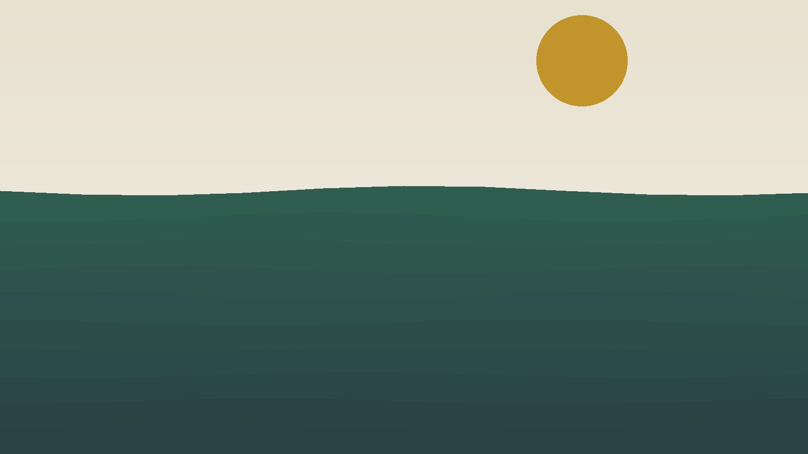
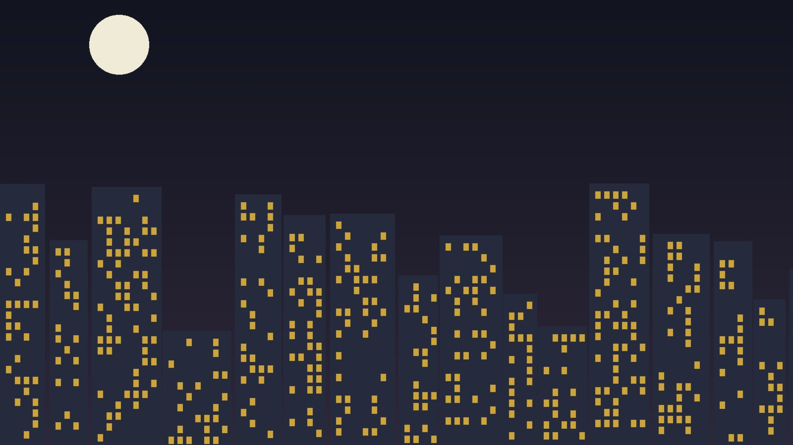

Le carnet
Tous les récits
Chaque texte est accompagné des images prises sur le moment.

La traversée du Vercors
Trois jours à pied sur les hauts plateaux, entre brouillard du matin et lumière rasante du soir.
Lire le récit →
Carnets du littoral
Marcher au rythme de la marée, entre criques désertes et villages de pêcheurs.
Lire le récit →
Lumières de la ville
Une nuit blanche à arpenter les rues, à la recherche de ce qui ne dort jamais.
Lire le récit →